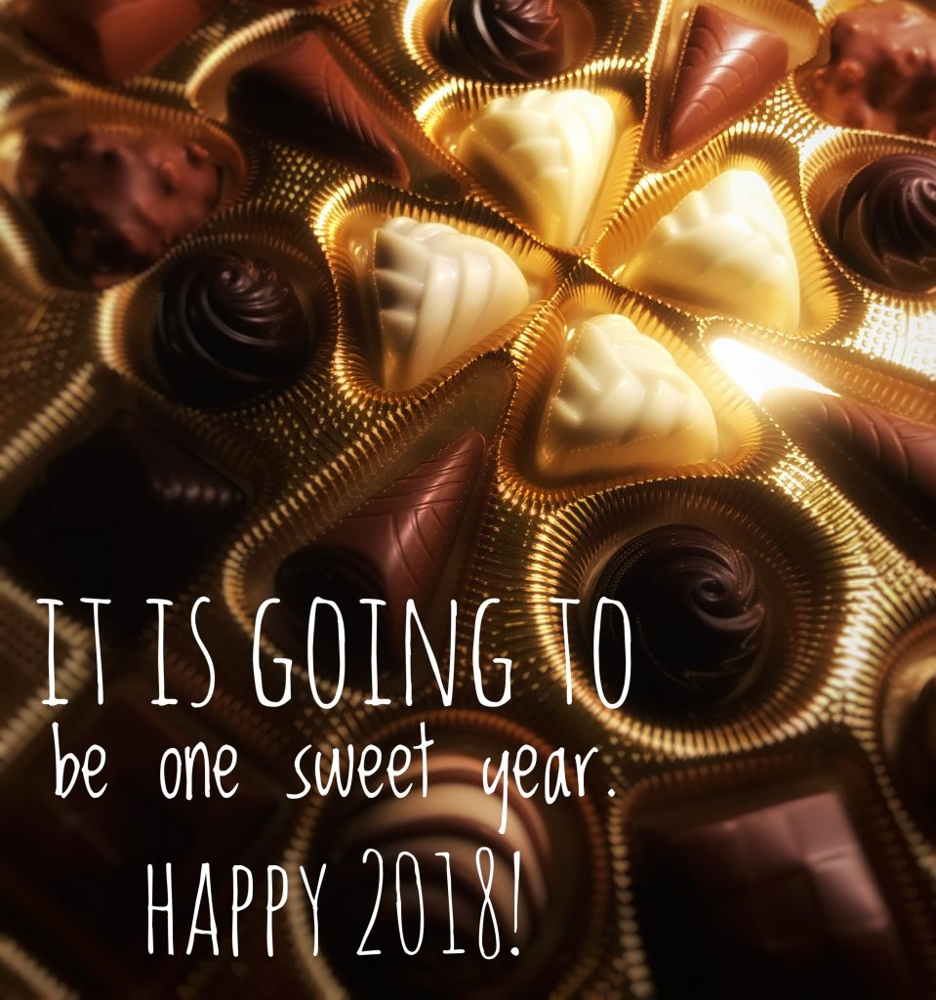

Photo by Francesca Tosolini
Auguro a tutti un Felice Anno Nuovo, spero che il 2018 sia davvero un anno dolcissimo per ciascuno di voi. I wish you all a Happy New Year, I hope that 2018 is really going to be a very sweet year for each one of you.